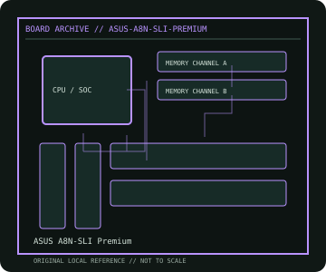

[ INDIVIDUAL COMPONENT // MOTHERBOARDS ]
ASUS A8N-SLI Premium
AMD Socket 939 dual-GPU desktop platform, 2005. This record documents the named model and its documented variants; confirm the PCB revision, submodel and firmware on the physical unit.

REVISION WARNING: Similar model names and PCB revisions may have different processors, connectors or firmware. Read the silkscreen and assembly code; use the support files for that exact board variant.
Specifications
| Catalog subcategory | AMD Socket platforms |
|---|---|
| Exact model / era | ASUS A8N-SLI Premium — AMD Socket 939 dual-GPU desktop platform, 2005 |
| CPU and socket / SoC | Socket 939 Athlon 64, Athlon 64 FX and Athlon 64 X2 CPUs as listed by ASUS and supported BIOS |
| Chipset / platform | NVIDIA nForce4 SLI X16 |
| Memory | Four DDR DIMM slots, dual-channel DDR; capacity/speed and ECC status vary by CPU and DIMM population |
| Slots and connectivity | ATX; two PCIe x16 graphics slots with x16/x16 SLI lanes, three PCIe x1 and two PCI; SATA 3 Gb/s, IDE, dual Gigabit LAN and IEEE 1394 |
| Firmware | ASUS Award BIOS; CPU stepping and dual-core support require the correct board BIOS. This model has a heatpipe chipset assembly with specific orientation requirements. |
Compatibility and revision notes
Socket 939 is not AM2; use unbuffered DDR rather than DDR2. Ensure the chipset heatpipe's airflow direction is appropriate and only use NVIDIA-supported SLI configurations.
Socket, connector shape and family branding alone do not establish compatibility. Verify the exact processor list, minimum BIOS, memory population table, power input, dimensions, and shared-lane behavior in the cited manual before installation.
Preservation and repair
Inspect socket pins and heatpipe mounting/contact; the passive chipset cooler depends on case airflow. Check for degraded electrolytic capacitors and noisy/failed onboard fans; record BIOS before clearing CMOS.
For archival preservation, photograph the PCB, labels, connectors and included accessories before cleaning. Record serial/date codes, firmware versions, known faults, prior repairs and test conditions; use ESD-safe handling and do not power a board with loose conductive hardware beneath it.
Sources & further reading
- ASUS A8N-SLI Premium — product/manual referenceModel-specific platform, board layout and interface reference.
- ASUS A8N-SLI Premium — support and firmware resourcesSupport documentation; match the PCB revision, CPU support list and firmware release to the physical board.
Manufacturer/model documentation is the primary reference. Where vendor support is archived, match its revision notes to the board and do not cross-flash firmware from a similar product.